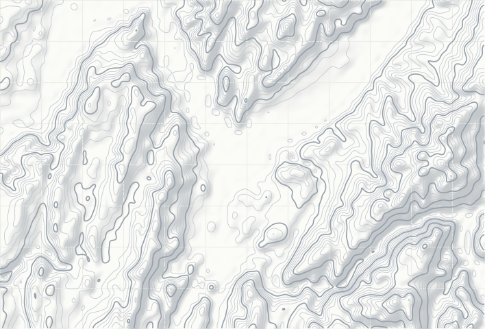

Pour chaque sommet, le script lit la colonne d'air de la vallée qu'il domine à l'heure du lever : modèles AROME (Météo France) et ICON-D2 (DWD), niveaux de 1000 à 700 hPa, via Open-Meteo.
L'indice combine la présence de nuages bas, l'altitude du sommet de la couche sous le sommet visé, l'air sec au sommet, l'inversion, le vent et la situation de la veille, puis le ciel au dessus pour voir le lever.
Sur la carte, la nappe est dessinée là où le relief réel (Copernicus DEM) est sous l'altitude prévue de la couche, en partant du fond de chaque vallée. Ce n'est pas encore une probabilité calibrée.